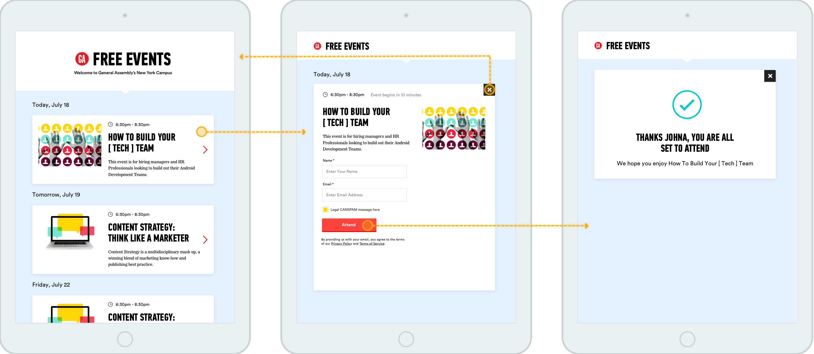

Event Check-in @ GA
This application lives at the front desk of General Assembly's 18 locations and provides a quick list view of upcoming free events.
Students hanging around campus can browse and sign up for relevant events.
This application helped to alleviate a lot of time the front desk staff was spending fielding questions regarding happenings on campus.

The existing iPads on campus were previously set to the website homepage. This application provides a more relevant physical artifact for students to interact with at General Assembly's campus locations.
The list view is intentionally simple and pulls only geo-specific free events from the iPad's location.